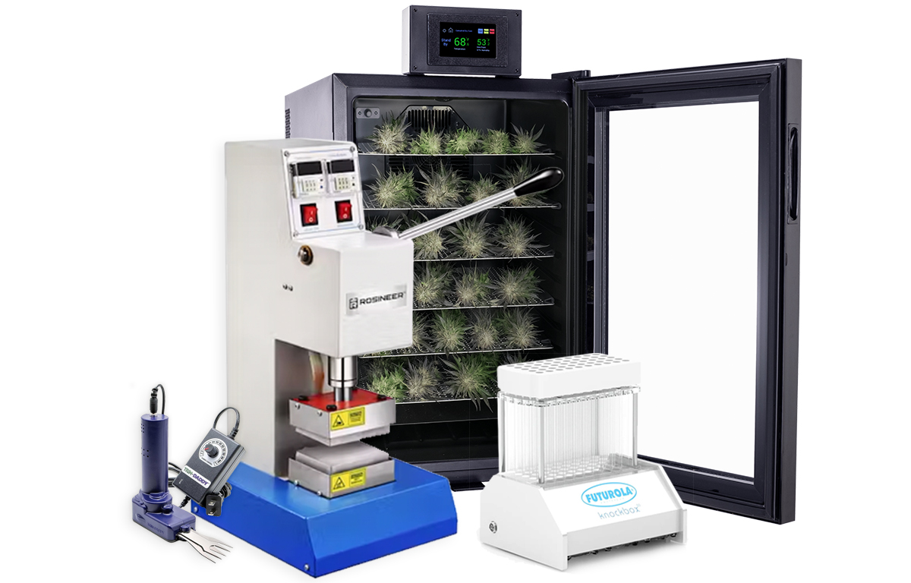

Grow Smarter,
Harvest Better!
At Medatron Home Grown, we’re not just a grow supply store—we’re your ultimate grow guide. Whether you’re just starting out or leveling up your skills, we’ve got the gear, rentals, and hands-on expertise to help you grow smarter and harvest better. As a family-run business, we’ve spent years perfecting the art of thriving plants—and now we’re here to hand that baton to you. Welcome. Connect here for upcoming classes, pro grow systems, hydroponics, and the latest industry updates—because when you grow with us, you grow like a pro!
EquipmentRentals
We know that you may not be ready to invest in your own equipment to grow your plants. That’s why we offer rentals to our newer growers. All rentals are on a first-come, first-serve basis.

Home GrowAcademy
Our intimate classes in Meriden, Connecticut teach you everything you need to know about growing plants with our grow systems. Classes book quickly, so make sure that you sign up today.
Contact Us
Have questions or need advice on your next grow? Reach out and our team will get back to you as soon as possible.